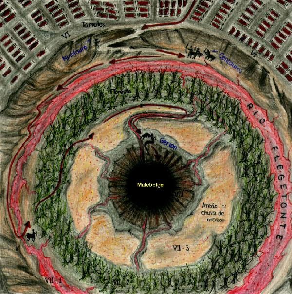

| 
CIDADE DE DITE E FOSSO (círculos VI e VII): morada dos que pecaram por heresia e violência.
- Círculo VI: Heréticos. Em cada túmulo, membros de uma seita são cozinhados
eternamente (Canto IX).
- Descida para o círculo VII: Caminho estreito onde Dante e Virgílio
encontram o Minotauro (Canto XII).
- Círculo VII - 1º giro: Culpados de violência contra o próximo.
Centauros garantem a ordem neste círculo.
- Rio Flegetonte: Rio de sangue fervente onde são torturados
os violentos contra o próximo, como os assassinos, tiranos e assaltantes
(Canto XII).
- Círculo VII - 2º giro: Culpados de violência contra si próprios.
- Floresta das Hárpias: Onde as almas suicidas, presas dentro
de árvores, são torturadas pelas Hárpias (Canto
XIII) e os que perderam todos os seus bens por vontade própria
são dilacerados por cadelas famintas.
- Círculo VII - 3º giro: Culpados de violência contra Deus, Natureza
e Arte.
- Deserto ardente: Onde os pecadores do 3º giro são torturados
por uma chuva eterna de brasas que cai em um deserto estéril(Canto
XIV).
- Fosso: Malebolge (valas malditas): Círculo VIII (morada dos
culpados de fraude dolosa). A descida para o profundo fosso é realizada
montando nas costas do monstro Gerión (Canto
XVII) que nada através do espesso ar do Inferno.
Ilustração de Helder
da Rocha.
|